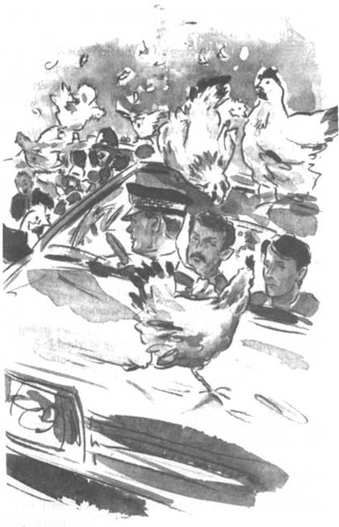

Listen to Part 1:
Thứ bảy, ngày 17 tháng 4 là một ngày xuân tuyệt đẹp. Trời đầy nắng ấm. Hoa nở rộ khắp vườn tược và công viên. Nắng tràn ngập căn phòng của Tom qua cửa sổ.
Tom từ từ xuống bếp. Cậu không ăn sáng.
Bà Cutter hỏi: "Có chuyện gì vậy, Tom?
Tom đáp: "Không có gì đâu ạ.
Bà Cutter nói: "Nhưng bình thường thứ bảy nào cậu chả ăn sáng thật no cơ mà. Có phải cậu thấy không khỏe không?
Tom không trả lời. Cậu chẳng quan tâm đến đồ ăn. Cậu buồn quá. Rita sắp kết hôn! Mà Tom lại phải chỉ ra danh tính của cô cho cảnh sát. Cậu sẽ phản bội cô bằng một nụ hôn.
Bà Cutter nói: "Cậu nên quay lại giường nằm nghỉ đi. Để tôi lấy cho cậu ít thuốc.
Tom nói: "Con không thể nằm ở giường được. Con phải đi dự đám cưới.
Tom quay lại phòng mình và ngồi xuống giường. Cậu có nên đi dự đám cưới không? Hay là trốn đi? Cậu nhìn đồng hồ. Mười hai giờ. Thám tử đến lúc mười hai giờ kia mà. Cậu chạy đến cửa sổ phòng ngủ. Không, đã quá muộn rồi. Cậu không thể chuồn đi được. Thám tử đang ngồi trên xe ô tô cùng một cảnh sát khác. Chiếc xe đỗ ngay trên con đường đối diện nhà Tom.
Tom mặc bộ vest vào rồi ra khỏi nhà gặp thám tử
Listen to Part 2:
Cậu hỏi: "Con có bắt buộc phải chỉ ra Rita không ạ?
Thanh tra Finch trả lời: "Có chứ. Nhớ rằng cậu đã ký tờ giấy cho ngân hàng rồi, Tom ạ. Nếu cậu không giúp tôi, tôi sẽ phải bắt cậu đấy.
Tom nói: "Nhưng con chắc là Rita vô tội mà. Ông Spooner mới là kẻ phạm tội. Ông ta đã lừa Rita và —'
Thám tử nói: "Tôi phải bắt Rita và Spooner lại. Rồi tòa sẽ quyết định xem ai phạm tội, ai vô tội.
Thư mời dự đám cưới của Rita ghi rõ: 12 giờ 45 tại Phòng đăng ký kết hôn Silverton. Tòa đăng ký kết hôn là một tòa nhà lớn màu trắng nằm ở trung tâm thị trấn. Người ta thường kết hôn ở tòa đăng ký kết hôn nếu không muốn kết hôn ở nhà thờ.
Thanh tra Finch nói: "Tôi muốn cậu chỉ ra Rita và Spooner khi họ đến tòa đăng ký kết hôn. Không được để Spooner trốn thoát.
Tom vô cùng bối rối. Cậu ghét Spooner và muốn giúp cảnh sát bắt hắn ta. Nhưng không biết Rita sẽ ra sao? Tom không muốn cô gặp rắc rối với cảnh sát. Liệu cô có phải vào tù không?
Người cảnh sát lái xe nói: "Chỉ mất mười phút để đến tòa đăng ký kết hôn. Chúng ta còn nhiều thời gian.
Nhưng khi họ lái xe đi qua Trung tâm Thành phố Silverton thì bị tai nạn. Một chiếc xe tải đâm vào đường chính. Chiếc xe tải rơi xuống đường, chắn hết giao thông ở khu vực đó. Trên xe tải chở hàng trăm thùng gà. Chúng vỡ ra và gà chạy toán loạn khắp nơi. Mọi người cố giúp tài xế xe tải bắt lại những con gà. Cảnh sát và lính cứu hỏa đến. Tất cả cùng hợp sức bắt gà, di chuyển các thùng gà và cả chiếc xe tải.

Listen to Part 3:
Cảnh sát và lính cứu hỏa đến. Tất cả cùng hợp sức bắt gà, di chuyển các thùng gà và cả chiếc xe tải.
Thanh tra Finch nói: "Không thể tin được! Tại sao lại xảy ra chuyện này ngay lúc này chứ?
Mọi người vừa cười vừa cổ vũ khi thấy cảnh sát và lính cứu hỏa cố bắt những con gà. Nhìn thật buồn cười. Nhưng Thanh tra Finch thì không thấy buồn cười chút nào. Ông nhảy ra khỏi xe rồi kéo theo cả Tom.
Thám tử nói: "Chúng ta phải chạy bộ, không thì sẽ lỡ mất đám cưới.
Tom và thám tử đến tòa đăng ký kết hôn. Rita và Spooner không thấy ở ngoài tòa nhà. Chiếc ô tô màu trắng lớn đỗ ở bên ngoài tòa đăng ký kết hôn. Đằng sau xe có gắn biển ghi VỪA MỚI CƯỚI. Thanh tra Finch hỏi người tài xế.
Ông ta nói với tài xế: "Ở đây có chuyện gì vậy? Rita và —
Tài xế đáp: "Hai người đó bên trong ạ. Đang làm lễ cưới.
Tom và thám tử nhìn nhau.Tom nói: "Chắc là chúng ta đến muộn rồi.
Nhưng thám tử không nghe cậu. Ông đã chạy vào trong tòa nhà rồi.